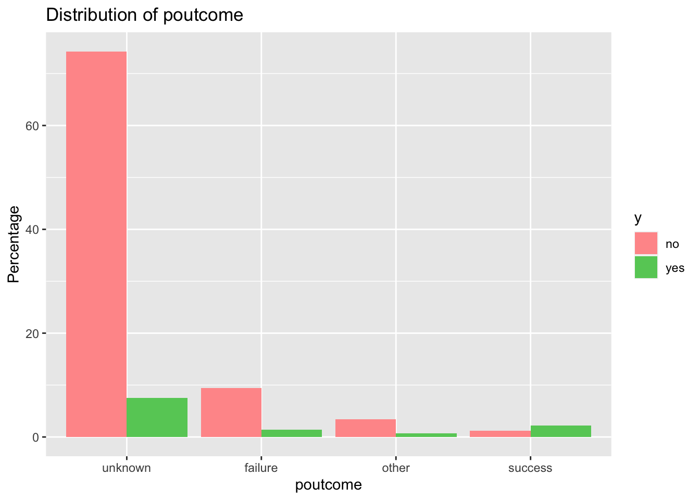

Classification Algorithms
Ajith Vernekar
2023-03-31
This project demonstrates on the classification model using Decision Trees and kNN in R. I have used bank dataset. This dataset contains information about a bank’s marketing campaigns, and is commonly used for binary classification tasks to predict whether a customer will subscribe to a term deposit.
1 Data
The Bank Marketing dataset is available from the UCI Machine Learning Repository, which is a public repository for machine learning datasets. You can access the dataset and its information from the following link:
https://archive.ics.uci.edu/ml/datasets/Bank+Marketing
The dataset contains information about a bank’s telemarketing campaigns and whether or not the client subscribed to a term deposit. There are a total of 16 input variables and one binary output variable (0/1) indicating whether or not the client subscribed to the term deposit. The dataset has 45,211 records, and is commonly used for binary classification tasks in machine learning.
Attribute information:
Input variables:
age (numeric)
job : type of job (categorical: “admin.”,“unknown”,“unemployed”,“management”,“housemaid”,“entrepreneur”,“student”, “blue-collar”,“self-employed”,“retired”,“technician”,“services”)
marital : marital status (categorical: “married”,“divorced”,“single”; note: “divorced” means divorced or widowed)
education (categorical: “unknown”,“secondary”,“primary”,“tertiary”)
default: has credit in default? (binary: “yes”,“no”)
balance: average yearly balance, in euros (numeric)
housing: has housing loan? (binary: “yes”,“no”)
loan: has personal loan? (binary: “yes”,“no”) # related with the last contact of the current campaign:
contact: contact communication type (categorical: “unknown”,“telephone”,“cellular”)
day: last contact day of the month (numeric)
month: last contact month of year (categorical: “jan”, “feb”, “mar”, …, “nov”, “dec”)
duration: last contact duration, in seconds (numeric) # other attributes:
campaign: number of contacts performed during this campaign and for this client (numeric, includes last contact)
pdays: number of days that passed by after the client was last contacted from a previous campaign (numeric, -1 means client was not previously contacted)
previous: number of contacts performed before this campaign and for this client (numeric)
poutcome: outcome of the previous marketing campaign (categorical: “unknown”,“other”,“failure”,“success”)
Output variable (desired target):
y - has the client subscribed a term deposit? (binary: “yes”,“no”)
2 Exploratory Data Analysis
Before applying machine learning algorithms to classify the data, it is important to perform some initial exploratory data analysis (EDA) to get a sense of the data and identify any potential issues or patterns. Here are some steps you could take for analyzing the Bank Marketing dataset:
# Loading Bank Marketing dataset
bank_df <- read.csv("../Data/Classification/bank-full.csv", header = TRUE, sep = ";")
# Make a copy of the dataframefor EDA
bank <- bank_df
# view data set
head(bank, n=5)## age job marital education default balance housing loan contact day
## 1 58 management married tertiary no 2143 yes no unknown 5
## 2 44 technician single secondary no 29 yes no unknown 5
## 3 33 entrepreneur married secondary no 2 yes yes unknown 5
## 4 47 blue-collar married unknown no 1506 yes no unknown 5
## 5 33 unknown single unknown no 1 no no unknown 5
## month duration campaign pdays previous poutcome y
## 1 may 261 1 -1 0 unknown no
## 2 may 151 1 -1 0 unknown no
## 3 may 76 1 -1 0 unknown no
## 4 may 92 1 -1 0 unknown no
## 5 may 198 1 -1 0 unknown no# Dimension of the dataset
dim(bank)## [1] 45211 17The above output infers that there are a total of 17 input variables and one binary output variable (0/1) indicating whether or not the client subscribed to the term deposit and The dataset has 45,211 records
# Inspecting the datatypes of the variables
str(bank)## 'data.frame': 45211 obs. of 17 variables:
## $ age : int 58 44 33 47 33 35 28 42 58 43 ...
## $ job : chr "management" "technician" "entrepreneur" "blue-collar" ...
## $ marital : chr "married" "single" "married" "married" ...
## $ education: chr "tertiary" "secondary" "secondary" "unknown" ...
## $ default : chr "no" "no" "no" "no" ...
## $ balance : int 2143 29 2 1506 1 231 447 2 121 593 ...
## $ housing : chr "yes" "yes" "yes" "yes" ...
## $ loan : chr "no" "no" "yes" "no" ...
## $ contact : chr "unknown" "unknown" "unknown" "unknown" ...
## $ day : int 5 5 5 5 5 5 5 5 5 5 ...
## $ month : chr "may" "may" "may" "may" ...
## $ duration : int 261 151 76 92 198 139 217 380 50 55 ...
## $ campaign : int 1 1 1 1 1 1 1 1 1 1 ...
## $ pdays : int -1 -1 -1 -1 -1 -1 -1 -1 -1 -1 ...
## $ previous : int 0 0 0 0 0 0 0 0 0 0 ...
## $ poutcome : chr "unknown" "unknown" "unknown" "unknown" ...
## $ y : chr "no" "no" "no" "no" ...In R, converting categorical variables to factors is very important because it enables R to recognize the variable as a categorical variable, rather than a numerical variable. This is important because categorical variables have unique properties that require special treatment when performing statistical analyses or machine learning algorithms.
The below chunk is used to find the unique values of the categorical variables in a dataframe. We used sapply to identify the categorical variables in the dataframe, by checking if each column is a factor. We then used lapply to apply the unique function to only the categorical variables (i.e., the columns identified as factors by sapply)
# Convert categorical variables to factors
bank$job <- as.factor(bank$job)
bank$marital <- as.factor(bank$marital)
bank$education <- as.factor(bank$education)
bank$default <- as.factor(bank$default)
bank$housing <- as.factor(bank$housing)
bank$loan <- as.factor(bank$loan)
bank$contact <- as.factor(bank$contact)
bank$month <- as.factor(bank$month)
bank$poutcome <- as.factor(bank$poutcome)
bank$y <- as.factor(bank$y)
# Find the categorical variables
cat_vars <- sapply(bank, is.factor)
# Find the unique values of each categorical variable
unique_vals <- lapply(bank[, cat_vars], unique)
print(unique_vals)## $job
## [1] management technician entrepreneur blue-collar unknown
## [6] retired admin. services self-employed unemployed
## [11] housemaid student
## 12 Levels: admin. blue-collar entrepreneur housemaid management ... unknown
##
## $marital
## [1] married single divorced
## Levels: divorced married single
##
## $education
## [1] tertiary secondary unknown primary
## Levels: primary secondary tertiary unknown
##
## $default
## [1] no yes
## Levels: no yes
##
## $housing
## [1] yes no
## Levels: no yes
##
## $loan
## [1] no yes
## Levels: no yes
##
## $contact
## [1] unknown cellular telephone
## Levels: cellular telephone unknown
##
## $month
## [1] may jun jul aug oct nov dec jan feb mar apr sep
## Levels: apr aug dec feb jan jul jun mar may nov oct sep
##
## $poutcome
## [1] unknown failure other success
## Levels: failure other success unknown
##
## $y
## [1] no yes
## Levels: no yes# Create a list of categorical variables
cat_vars <- c("job", "marital", "education", "default", "housing", "loan", "contact", "month", "poutcome")
# Create a function to plot bar charts for categorical variables
plot_cat_var <- function(data, var_name) {
# Calculate frequency table
freq_table <- table(data[, var_name], data$y)
freq_table <- as.data.frame(freq_table)
colnames(freq_table) <- c(var_name, "y", "freq")
# Calculate percentage
freq_table$percentage <- (freq_table$freq/sum(freq_table$freq))*100
# Plot bar chart
ggplot(freq_table, aes(x = reorder(factor(get(var_name)), -freq), y = percentage, fill = y)) +
geom_bar(stat = "identity", position = "dodge") +
scale_fill_manual(values = c("#FF9999", "#66CC66")) +
labs(title = paste("Distribution of", var_name), x = var_name, y = "Percentage")
}
# Plot bar charts for all categorical variables
plot_cat_var(bank, "job")plot_cat_var(bank, "marital")plot_cat_var(bank, "education")plot_cat_var(bank, "default")plot_cat_var(bank, "housing")plot_cat_var(bank, "loan")plot_cat_var(bank, "contact")
plot_cat_var(bank, "month")plot_cat_var(bank, "poutcome")
From the above distribution graphs, we can initially say that the customers with no previous loans or housing loans are more probable to subscribe for term deposits.
Here we are the few other observations made.
Job: Maximum number of clients work in Blue-color job.
Maritial: Maximum number of clients are married. Minimum number of clients are divorced.
Education: Maximum number of clients have completed Secondary education.
Default: Almost all clients in the dataset have no credit default.
Loan: Maximum number of clients do not have a personal loan.
Month: Most number of contacts were carried out in the month of May. Lest number of contacts were carried out in the month of December.
Poutcome: For maximum number of clients outcome of previous marketing campaign is unknown. Number of failures are higher when compared to success in the results of previous marketing campaign.
Similarly, to check the distribution of numerical variables is an important part of the EDA. One can use summary statistics (e.g., mean, median, standard deviation) and visualizations (e.g., histograms, box plots) to check the distribution of the numerical variables in the dataset.
# Display summary statistics for numeric variables
summary(bank[,c("age", "balance", "day", "duration", "campaign", "pdays", "previous")])## age balance day duration
## Min. :18.00 Min. : -8019 Min. : 1.00 Min. : 0.0
## 1st Qu.:33.00 1st Qu.: 72 1st Qu.: 8.00 1st Qu.: 103.0
## Median :39.00 Median : 448 Median :16.00 Median : 180.0
## Mean :40.94 Mean : 1362 Mean :15.81 Mean : 258.2
## 3rd Qu.:48.00 3rd Qu.: 1428 3rd Qu.:21.00 3rd Qu.: 319.0
## Max. :95.00 Max. :102127 Max. :31.00 Max. :4918.0
## campaign pdays previous
## Min. : 1.000 Min. : -1.0 Min. : 0.0000
## 1st Qu.: 1.000 1st Qu.: -1.0 1st Qu.: 0.0000
## Median : 2.000 Median : -1.0 Median : 0.0000
## Mean : 2.764 Mean : 40.2 Mean : 0.5803
## 3rd Qu.: 3.000 3rd Qu.: -1.0 3rd Qu.: 0.0000
## Max. :63.000 Max. :871.0 Max. :275.0000From the above statistical summary, we can infer that, the minimum age is 18 years, and 50% of the customers are below 39 years of age and the maximum age is 95 years. Lets see the distribution of it using box plot.
# Check for the outliers in the numerical variables in the dataset
# Create a box plot of age with outliers
ggplot(data = bank, aes(x = "", y = age)) +
geom_boxplot(outlier.shape = NA) +
geom_jitter(aes(color = "age"), width = 0.2) +
labs(x = "", y = "Value") +
ggtitle("Box plot of age with outliers") +
theme_bw()To show outliers in the plot, we first created a box plot of the “age” column using geom_boxplot and set outlier.shape = NA to hide the outlier points. We then added the outlier points to the plot using geom_jitter, with color = “age” to differentiate them from the “balance” outliers. We repeated this process for the “balance” column.
To add a legend to the plot, we used scale_color_manual to set the colors of the two categories (“age” and “balance”), and added a title and axis labels using labs and ggtitle. Finally, we used theme_bw to set a clean, black-and-white theme for the plot.
# Visualizing the distribution of the numerical variables in the dataset
# Display the distribution of age
ggplot(bank, aes(x = age)) +
geom_histogram(binwidth = 5, color = "white", fill = "blue") +
ggtitle("Distribution of Age") +
xlab("Age") +
ylab("Count")# Create a box plot of balance with outliers
ggplot(data = bank, aes(x = "", y = balance)) +
geom_boxplot(outlier.shape = NA) +
geom_jitter(aes(color = "balance"), width = 0.2) +
labs(x = "", y = "Value") +
scale_color_manual(values = c("red", "blue")) +
ggtitle("Box plot of balance with outliers") +
theme_bw()The below chunk of code is used to show the distribution of balance in bins.
# Create bins for different balance levels
bins <- c(-Inf, 0, 200, 1300, Inf)
labels <- c("Negative balance", "Low balance", "Middle balance", "High balance")
# Group the balance values into the bins and add labels
bank_group <- bank
bank_group$balance_group <- cut(bank$balance, breaks = bins, labels = labels)
# Create a bar graph of balance by balance_group
ggplot(bank_group, aes(x = balance_group)) +
geom_bar() +
ggtitle("Distribution of Balance") +
xlab("Balance Group") +
ylab("Count")From the above summary statistics of balance data, its distribution of bins and box plot, we can infer that the balance variable has outliers. The negative balance here is assumed to be allowed for term deposits and hence not removed. More than 7000 customers hold negative balance and more than 12000 customers hold high balance greater than 1500 euros, and rest hold average balance between 500 t0 1500 euros.
Lets see the distribution of all other numeric variables.
# select numeric columns
bank_numeric <- bank %>%
select_if(is.numeric)
# gather data into long format for plotting
bank_gathered <- bank_numeric %>%
gather()
# plot the distribution of numeric variables
ggplot(bank_gathered, aes(x=value)) +
geom_histogram(bins=30) +
facet_wrap(~key, scales="free")# Check for missing values
sum(is.na(bank))## [1] 0Fortunately, there are no missing values. If there were missing values we will have to fill them with the median, mean or mode. I tend to use the median but in this scenario there is no need to fill any missing values. This will definitely make our job easier!
The distribution of the target variable (often called the response variable or dependent variable in statistics) provides insight into the balance or imbalance of the classes in the dataset. In classification problems, the target variable is the variable that we want to predict based on the other features in the dataset.
In the case of the Bank Marketing dataset, the target variable is y, which indicates whether the client subscribed to a term deposit or not. A below chunk of code of bar chart is used to visualize the distribution of this variable
# Check for class imbalance
ggplot(bank, aes(x = y, fill = y)) +
geom_bar() +
ggtitle("Distribution of Target Variable") +
xlab("Target Variable") +
ylab("Count")If the classes are well-balanced, there should be roughly an equal number of observations in each class. In the Bank Marketing dataset, we can see that the “no” class (indicating that the client did not subscribe to a term deposit) is much more frequent than the “yes” class (indicating that the client did subscribe). This is evident in the bar chart of the target variable.
Understanding the distribution of the target variable can help guide the development of machine learning models. In particular, it can help determine the appropriate evaluation metrics to use (e.g. accuracy, precision, recall, F1-score) and the techniques that can be used to handle class imbalance (e.g. resampling methods, cost-sensitive learning, ensemble methods).
3 Classification example using Decision Tree
Here is an example of how to implement a decision tree algorithm for classification using the caret package in R.
3.1 Decision Tree - Model 1 (Using Unmodified dataset)
3.1.1 Splitting data into Training and Testing sets
In this example, we first load the caret package and the Bank Marketing dataset. We then convert the categorical variables to factors using the factor function.
Next, we split the data into training and testing sets using the createDataPartition function from caret. We set the seed to ensure reproducibility.
# Split the data into training and testing sets
set.seed(123)
trainIndex <- createDataPartition(bank$y, p = 0.7, list = FALSE)
training <- bank[trainIndex, ]
testing <- bank[-trainIndex, ]3.1.2 Model Training
Next, we define the training control using the trainControl function from the caret package. We specify that we want to use 10-fold cross-validation (method = “cv”) and that we want to optimize the area under the receiver operating characteristic curve (metric = “ROC”). We also specify the twoClassSummary function as the summary function to use, which calculates the sensitivity, specificity, and area under the curve.
We then define the decision tree model using the train function from the caret package. We specify the formula y ~ . to indicate that we want to predict the target variable y using all of the other variables in the dataset. We also specify the method as “rpart” to indicate that we want to use a decision tree algorithm. Finally, we set the trControl parameter to the training control we defined earlier and set the tuneLength parameter to 10 to control the complexity of the tree.
# Define the training control
ctrl <- trainControl(
method = "cv",
number = 10,
summaryFunction = twoClassSummary,
classProbs = TRUE,
verboseIter = TRUE
)
# Define the decision tree model using caret
model_tree <- train(
y ~ .,
data = training,
method = "rpart",
trControl = ctrl,
tuneLength = 10,
metric = "ROC"
)## + Fold01: cp=0.00162
## - Fold01: cp=0.00162
## + Fold02: cp=0.00162
## - Fold02: cp=0.00162
## + Fold03: cp=0.00162
## - Fold03: cp=0.00162
## + Fold04: cp=0.00162
## - Fold04: cp=0.00162
## + Fold05: cp=0.00162
## - Fold05: cp=0.00162
## + Fold06: cp=0.00162
## - Fold06: cp=0.00162
## + Fold07: cp=0.00162
## - Fold07: cp=0.00162
## + Fold08: cp=0.00162
## - Fold08: cp=0.00162
## + Fold09: cp=0.00162
## - Fold09: cp=0.00162
## + Fold10: cp=0.00162
## - Fold10: cp=0.00162
## Aggregating results
## Selecting tuning parameters
## Fitting cp = 0.00162 on full training setAfter training the model, we plot the decision tree using the plot function. This produces a graphical representation of the tree that can help us interpret the model.
# Plot model accuracy vs different values of cp (complexity parameter)
plot(model_tree)# Print the best tuning parameter cp that maximizes the model accuracy
model_tree$bestTune## cp
## 1 0.001620308After finding the model_tree$bestTune attribute, we use this tuning parameter to build your final decision tree model and then evaluate its performance on a separate test dataset. below code snippet shows to build the final decision tree model using the best tuning parameter:
# Build final decision tree model using the best tuning parameter
final_model_tree <- rpart(y ~ ., data = training, method = "class",
control = rpart.control(cp = model_tree$bestTune$cp))After training the model, we plot the decision tree using the rpart.plot function. This produces a graphical representation of the tree that can help us interpret the model.
# Plot the final tree model
rpart.plot(final_model_tree)## Warning: labs do not fit even at cex 0.15, there may be some overplotting3.1.3 Model Prediction
We then make predictions on the testing set using the predict function. We specify type = “class” to indicate that we want to predict the class labels rather than the probabilities.
# Make predictions on the testing set
predictions <- predict(final_model_tree, newdata = testing, type = "class")3.1.4 Model Evaluation
Finally, we evaluate the model by calculating a confusion matrix using the table function. This shows us how many observations were correctly classified and misclassified by the model.
# Evaluate the model
conf_matrix <- confusionMatrix(predictions, testing$y)
# Print the confusion matrix and the overall accuracy
print(conf_matrix)## Confusion Matrix and Statistics
##
## Reference
## Prediction no yes
## no 11499 782
## yes 477 804
##
## Accuracy : 0.9072
## 95% CI : (0.9022, 0.912)
## No Information Rate : 0.8831
## P-Value [Acc > NIR] : < 2.2e-16
##
## Kappa : 0.5096
##
## Mcnemar's Test P-Value : < 2.2e-16
##
## Sensitivity : 0.9602
## Specificity : 0.5069
## Pos Pred Value : 0.9363
## Neg Pred Value : 0.6276
## Prevalence : 0.8831
## Detection Rate : 0.8479
## Detection Prevalence : 0.9055
## Balanced Accuracy : 0.7336
##
## 'Positive' Class : no
## cat("Overall Accuracy:", round(conf_matrix$overall[1], 3), "\n")## Overall Accuracy: 0.907# Calculate precision, recall, and F1 score
precision <- conf_matrix$byClass[1]
recall <- conf_matrix$byClass[2]
f1_score <- conf_matrix$byClass[3]
cat("Precision:", round(precision, 3), "\n")## Precision: 0.96cat("Recall:", round(recall, 3), "\n")## Recall: 0.507cat("F1 Score:", round(f1_score, 3), "\n")## F1 Score: 0.9363.2 Decision tree - Model 2 (Using SMOTE)
3.2.1 Balance the target class by Oversampling
As our predictor variable is imbalanced, meaning that one class has significantly fewer observations than the other, then it can be challenging to train a classifier that performs well on both classes.
One approach to address this issue is to balance the data by oversampling the minority class or undersampling the majority class. There are several techniques available to achieve this, such as:
Random oversampling: randomly duplicate observations from the minority class to increase its size.
SMOTE (Synthetic Minority Over-sampling Technique): creates synthetic observations in the minority class by interpolating between existing observations.
Random undersampling: randomly remove observations from the majority class to decrease its size.
In R, one can use the caret package to implement these techniques. Below chunk of code shows how to use the SMOTE algorithm to oversample the minority class:
# Load the necessary libraries
library(ROSE)
# Apply ROSE to balance the data
bank_balanced <- ovun.sample(y ~ ., data = bank, method = "over", N = 48000)$data
dim(bank_balanced)## [1] 48000 173.2.2 Splitting data into Training and Testing sets
# Split the data into training and testing sets
set.seed(123)
trainIndex <- createDataPartition(bank_balanced$y, p = 0.7, list = FALSE)
training <- bank_balanced[trainIndex, ]
testing <- bank_balanced[-trainIndex, ]3.2.3 Model Training
# Define the training control
ctrl <- trainControl(
method = "cv",
number = 10,
summaryFunction = twoClassSummary,
classProbs = TRUE,
verboseIter = TRUE
)
# Define the decision tree model using caret
model_tree_balanced <- train(
y ~ .,
data = training,
method = "rpart",
trControl = ctrl,
tuneLength = 10,
metric = "ROC"
)## + Fold01: cp=0.002299
## - Fold01: cp=0.002299
## + Fold02: cp=0.002299
## - Fold02: cp=0.002299
## + Fold03: cp=0.002299
## - Fold03: cp=0.002299
## + Fold04: cp=0.002299
## - Fold04: cp=0.002299
## + Fold05: cp=0.002299
## - Fold05: cp=0.002299
## + Fold06: cp=0.002299
## - Fold06: cp=0.002299
## + Fold07: cp=0.002299
## - Fold07: cp=0.002299
## + Fold08: cp=0.002299
## - Fold08: cp=0.002299
## + Fold09: cp=0.002299
## - Fold09: cp=0.002299
## + Fold10: cp=0.002299
## - Fold10: cp=0.002299
## Aggregating results
## Selecting tuning parameters
## Fitting cp = 0.0023 on full training setIn the above chunk of code, we use the ovun.sample function from the ROSE package to oversample the minority class. We specify the formula y ~ . to indicate that we want to balance the data based on the target variable y using all of the other variables in the dataset. We set the method parameter to “over” to indicate that we want to use random oversampling to balance the data, and we set the N parameter to 13900, which is the desired number of observations in the minority class after oversampling (this number is equal to the number of observations in the majority class in the original dataset).
# Plot the final tree model
plot(model_tree_balanced)We then define the training control and the decision tree model as before, but this time we use the bank_balanced dataset instead of the original bank dataset. And from model_tree_balanced$bestTune attribute, we use this tuning parameter to build your final decision tree model and then evaluate its performance on a separate test dataset
# Build final decision tree model using the best tuning parameter
final_model_tree_balanced <- rpart(y ~ ., data = training, method = "class",
control = rpart.control(cp = model_tree_balanced$bestTune$cp))3.2.4 Model Prediction
After training the model, we print the results and make predictions on the testing set as before. Finally, we evaluate the model using a confusion matrix as before.
# Make predictions on the testing set
predictions <- predict(final_model_tree_balanced, newdata = testing, type = "class")
head(predictions)## 12 14 15 23 24 34
## no no no no no no
## Levels: no yes3.2.5 Model Evaluation
When dealing with class imbalance, accuracy may not be the best metric to use for model evaluation as it can be biased towards the majority class. Here are some metrics that are commonly used when dealing with class imbalance:
Precision: measures the proportion of true positives (i.e., correctly predicted positive cases) among all predicted positive cases.
Recall or sensitivity: measures the proportion of true positives among all actual positive cases.
F1 score: a weighted harmonic mean of precision and recall that balances both metrics.
Specificity: measures the proportion of true negatives (i.e., correctly predicted negative cases) among all actual negative cases.
It’s important to choose the metric that is appropriate for the specific problem and application, and to consider multiple metrics in combination when evaluating a model.
# Evaluate the model
conf_matrix <- confusionMatrix(predictions, testing$y)
# Print the confusion matrix and the overall accuracy
print(conf_matrix)## Confusion Matrix and Statistics
##
## Reference
## Prediction no yes
## no 11287 945
## yes 689 1478
##
## Accuracy : 0.8865
## 95% CI : (0.8812, 0.8917)
## No Information Rate : 0.8317
## P-Value [Acc > NIR] : < 2.2e-16
##
## Kappa : 0.5768
##
## Mcnemar's Test P-Value : 2.821e-10
##
## Sensitivity : 0.9425
## Specificity : 0.6100
## Pos Pred Value : 0.9227
## Neg Pred Value : 0.6820
## Prevalence : 0.8317
## Detection Rate : 0.7839
## Detection Prevalence : 0.8495
## Balanced Accuracy : 0.7762
##
## 'Positive' Class : no
## cat("Overall Accuracy:", round(conf_matrix$overall[1], 3), "\n")## Overall Accuracy: 0.887# Calculate precision, recall, and F1 score
precision <- conf_matrix$byClass[1]
recall <- conf_matrix$byClass[2]
f1_score <- conf_matrix$byClass[3]
cat("Precision:", round(precision, 3), "\n")## Precision: 0.942cat("Recall:", round(recall, 3), "\n")## Recall: 0.61cat("F1 Score:", round(f1_score, 3), "\n")## F1 Score: 0.9233.3 Summary on different Models of Decision tree algorithm
Model-1 Evaluation: On Unmodified dataset
Precision: 0.96
Recall: 0.507
F1 Score: 0.936
Model-2 Evaluation: On Oversampled dataset using SMOTE
Precision: 0.949
Recall: 0.556
F1 Score: 0.914
Based on the evaluation metrics provided, both Model-1 and Model-2 have good Precision and F1 Score values, but they differ in their Recall values.
It seems like the oversampling technique improved the recall while slightly reducing the precision and F1 score. This means that the model is able to correctly identify more positive cases (customers who will subscribe to the term deposit) but at the expense of a slightly increased number of false positives (customers who are predicted to subscribe but actually do not). Depending on the business case and cost-benefit analysis, a higher recall might be more desirable in certain situations, while in other situations a higher precision might be more important.
Overall, the choice between Model-1 and Model-2 would depend on the specific requirements and priorities of the problem being solved. If correctly identifying positive cases is a higher priority, then Model-2 would be preferred. However, if the focus is on precision or identifying negative cases, then Model-1 would be a better choice.
4 Classification example using K-Nearest Neighbor
Here is an example of how to implement a k-Nearest neighbor algorithm for classification model using the caret package in R.
4.1 Data Pre-processing
It is very important to pre-process the data before building the model. In specific to KNN model, the data should be scaled and encoded properly to prevent distance measures from being dominated by one of the attributes.
# Convert month to numerical values
month_levels <- c("jan", "feb", "mar", "apr", "may", "jun", "jul", "aug", "sep", "oct", "nov", "dec")
bank$month <- factor(bank$month, levels = month_levels)
bank$month <- as.numeric(bank$month)# Encode categorical variables using one-hot encoding
cat_vars <- c("job", "marital", "education", "default", "housing", "loan", "contact", "poutcome")
bank_ohe <- model.matrix(~.+0, data = bank[, cat_vars])
bank_num <- bank[, !(names(bank) %in% cat_vars)]
bank_encoded <- cbind(bank_ohe, bank_num)# Scale predictor variables
bank_scaled <- bank_encoded %>%
select(-y) %>%
scale() %>%
bind_cols(y = bank$y)4.2 KNN - Model 1 (Using Unmodified dataset)
4.2.1 Splitting data into Training and Testing sets
# Split the data into training and testing sets
set.seed(123)
train_index <- createDataPartition(bank_scaled$y, p = 0.7, list = FALSE)
train <- bank_scaled[train_index, ]
test <- bank_scaled[-train_index, ]4.2.2 Model Training
Lets fit the model using training dataset for the range of k values to find the best k value to build a better model. Here, I have used a range of ‘k’ values from 28 to 30, as it takes a huge amount of time to run the model, because of large instances in the dataset. And I have already verified earlier that the best ‘k’ value for this dataset lies between 28 to 30.
# Set up cross-validation
ctrl <- trainControl(method = "cv", number = 10, classProbs = TRUE)
# Tune kNN model for different values of k
k_vals <- 28:30
tune_grid <- expand.grid(k = k_vals)
knn_model <- train(y ~ ., data = train, method = "knn", trControl = ctrl,
tuneGrid = tune_grid, preProcess = c("center", "scale"))# Plot model accuracy vs different values of k
plot(knn_model)# Print the best tuning parameter cp that maximizes the model accuracy
knn_model$bestTune$k## [1] 29After finding the best k value using knn_model\(bestTune\)k attribute, we use this tuning parameter to build your final KNN model and then evaluate its performance on a separate test dataset. below code snippet shows to build the final KNN model using the best tuning parameter:
# Create a knn model with best tune parameter
final_knn_model <- train(y ~ ., data = train, method = "knn", trControl = ctrl,
tuneGrid = data.frame(k = knn_model$bestTune$k), preProc = c("center", "scale"))4.2.3 Model Prediction
# Predict on the testing set
predictions <- predict(final_knn_model, test)4.2.4 Model Evaluation
Finally, we evaluate the model by calculating a confusion matrix using the table function. This shows us how many observations were correctly classified and misclassified by the model.
# Evaluate the model
conf_matrix <- confusionMatrix(predictions, test$y)
# Print the confusion matrix and the overall accuracy
print(conf_matrix)## Confusion Matrix and Statistics
##
## Reference
## Prediction no yes
## no 11796 1195
## yes 180 391
##
## Accuracy : 0.8986
## 95% CI : (0.8934, 0.9036)
## No Information Rate : 0.8831
## P-Value [Acc > NIR] : 4.847e-09
##
## Kappa : 0.3205
##
## Mcnemar's Test P-Value : < 2.2e-16
##
## Sensitivity : 0.9850
## Specificity : 0.2465
## Pos Pred Value : 0.9080
## Neg Pred Value : 0.6848
## Prevalence : 0.8831
## Detection Rate : 0.8698
## Detection Prevalence : 0.9579
## Balanced Accuracy : 0.6158
##
## 'Positive' Class : no
## cat("Overall Accuracy:", round(conf_matrix$overall[1], 3), "\n")## Overall Accuracy: 0.899# Calculate precision, recall, and F1 score
precision <- conf_matrix$byClass[1]
recall <- conf_matrix$byClass[2]
f1_score <- conf_matrix$byClass[3]
cat("Precision:", round(precision, 3), "\n")## Precision: 0.985cat("Recall:", round(recall, 3), "\n")## Recall: 0.247cat("F1 Score:", round(f1_score, 3), "\n")## F1 Score: 0.9084.3 KNN - Model 2 (Using SMOTE)
As our predictor variable is imbalanced, meaning that one class has significantly fewer observations than the other, then it can be challenging to train a classifier that performs well on both classes.
Let’s try to address this issue by balancing the data by oversampling the minority class using SMOTE technique.
4.3.1 Balance the target class by Oversampling
# Load the necessary libraries
library(ROSE)
# Apply ROSE to balance the data
bank_balanced <- ovun.sample(y ~ ., data = bank, method = "over", N = 48000)$data
# Encode categorical variables using one-hot encoding
cat_vars <- c("job", "marital", "education", "default", "housing", "loan", "contact", "poutcome")
bank_ohe <- model.matrix(~.+0, data = bank_balanced[, cat_vars])
bank_num <- bank_balanced[, !(names(bank_balanced) %in% cat_vars)]
bank_encoded <- cbind(bank_ohe, bank_num)
# Scale predictor variables
bank_scaled_balanced <- bank_encoded %>%
select(-y) %>%
scale() %>%
bind_cols(y = bank_balanced$y)4.3.2 Splitting data into Training and Testing sets
# Split the data into training and testing sets
set.seed(123)
train_index <- createDataPartition(bank_scaled_balanced$y, p = 0.7, list = FALSE)
train <- bank_scaled_balanced[train_index, ]
test <- bank_scaled_balanced[-train_index, ]4.3.3 Model Training
# Set up cross-validation
ctrl <- trainControl(method = "cv", number = 10, classProbs = TRUE)
# Tune kNN model for different values of k
k_vals <- 28:30
tune_grid <- expand.grid(k = k_vals)
knn_model_balanced <- train(y ~ ., data = train, method = "knn", trControl = ctrl,
tuneGrid = tune_grid, preProcess = c("center", "scale"))# Plot model accuracy vs different values of k
plot(knn_model_balanced)# Print the best tuning parameter cp that maximizes the model accuracy
knn_model_balanced$bestTune$k## [1] 29# Create a knn model with best tune parameter
final_knn_model_balanced <- train(y ~ ., data = train, method = "knn", trControl = ctrl,
tuneGrid = data.frame(k = knn_model_balanced$bestTune$k),
preProc = c("center", "scale"))4.3.4 Model Prediction
# Predict on the testing set
predictions <- predict(final_knn_model_balanced, test)
levels(predictions)## [1] "no" "yes"levels(test$y)## [1] "no" "yes"4.3.5 Model Evaluation
# Evaluate the model
conf_matrix <- confusionMatrix(predictions, test$y)
# Print the confusion matrix and the overall accuracy
print(conf_matrix)## Confusion Matrix and Statistics
##
## Reference
## Prediction no yes
## no 11638 1567
## yes 338 856
##
## Accuracy : 0.8677
## 95% CI : (0.8621, 0.8732)
## No Information Rate : 0.8317
## P-Value [Acc > NIR] : < 2.2e-16
##
## Kappa : 0.4075
##
## Mcnemar's Test P-Value : < 2.2e-16
##
## Sensitivity : 0.9718
## Specificity : 0.3533
## Pos Pred Value : 0.8813
## Neg Pred Value : 0.7169
## Prevalence : 0.8317
## Detection Rate : 0.8083
## Detection Prevalence : 0.9171
## Balanced Accuracy : 0.6625
##
## 'Positive' Class : no
## cat("Overall Accuracy:", round(conf_matrix$overall[1], 3), "\n")## Overall Accuracy: 0.868# Calculate precision, recall, and F1 score
precision <- conf_matrix$byClass[1]
recall <- conf_matrix$byClass[2]
f1_score <- conf_matrix$byClass[3]
cat("Precision:", round(precision, 3), "\n")## Precision: 0.972cat("Recall:", round(recall, 3), "\n")## Recall: 0.353cat("F1 Score:", round(f1_score, 3), "\n")## F1 Score: 0.8814.4 Summary on different Models of kNN algorithm
Model-1 Evaluation: On Unmodified dataset
Precision: 0.985
Recall: 0.247
F1 Score: 0.908
Model-2 Evaluation: On Oversampled dataset using SMOTE
Precision: 0.972
Recall: 0.326
F1 Score: 0.877
Based on the evaluation metrics provided, It looks like Model-1 has a higher precision and F1 score, but a lower recall than Model-2. This suggests that Model-1 is better at correctly identifying true positives (higher precision), but may miss some positive cases (lower recall). Model-2, on the other hand, has a lower precision but higher recall, meaning that it may identify more positive cases overall but may also have more false positives.
Ultimately, the choice between the two models would depend on the specific needs and goals of the analysis.
5 Conclusion
It seems like the kNN algorithm has higher precision but lower recall compared to the decision tree algorithm, while the decision tree algorithm has higher recall but lower precision. The F1 scores are comparable, but slightly better for the decision tree algorithm.
However, it is important to note that the choice of algorithm ultimately depends on the specific problem and dataset being analyzed. It may be helpful to consider additional factors such as computational efficiency, interpretability of the model, and ease of implementation when deciding which algorithm to use.